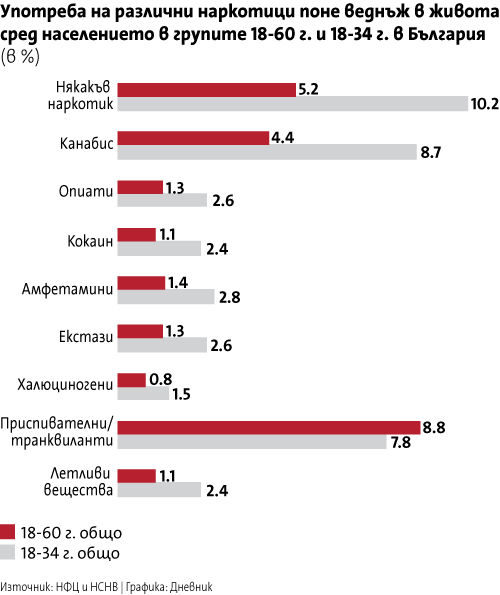
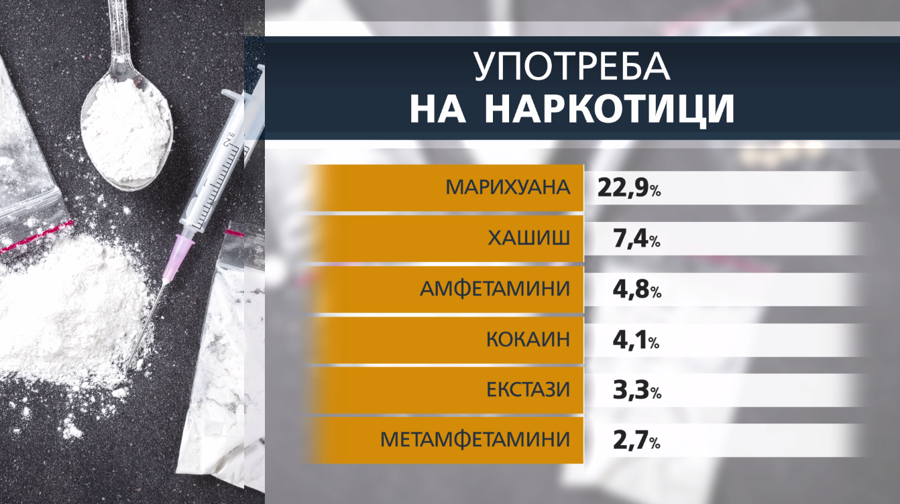

Статистика за употребата на наркотични вещества в България

Употребaта на синтетични наркотици у нас
Според статистиката - над 25 % от младежите са употребявали наркотик.
Най-популярната дрога сред студентите е марихуаната, следвана от хашиша, амфетамините и кокаина.

Данните показват още, че първият досег на студентите
до наркотици най-често става по време на купон.
Първата употреба на наркотични вещества, се
случва между 13-18 годишна възраст.